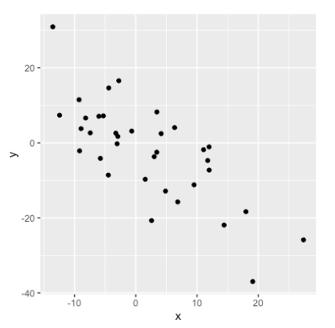

import seaborn as sns
sns.scatterplot(x='sleep_total', y='sleep_rem', data=msleep)
plt.show()Correlación y diseño de experimentos
En este capítulo, aprenderás a cuantificar la fuerza de una relación lineal entre dos variables, y explorarás cómo las variables de confusión pueden afectar a la relación entre otras dos variables. También verás cómo el diseño de un estudio puede influir en sus resultados, cambiar la forma en que deben analizarse los datos y afectar potencialmente a la fiabilidad de tus conclusiones.
Correlación
Realción entre dos variables

- x = variable explicativa o independiente.
- y = variable de respuesta o dependiente.
Coeficiente de correlación
Cuantifica la relación lineal entre dos variables.
Es un múmero entre -1 y 1.
La magnitud corresponde a la fuerza de la relación.
Signo (+ o -) corresponde a la dirección de la relación.
Magnitud = Fuerza de la relación
0.99 (Muy fuerte relación)

0.75 (Fuerte relación

0.56 (moderada relación)

0.21 (débil relación)

0.04 (sin relación)

- Conocer el valor de
xno nos dice nada acerca dey.
- Conocer el valor de
Signo = Dirección
0.75: Como xincrementayincrementa-0.75: Como xincrementaydecrece
 Visualización de relaciones

- Añadir una linea de tendencia
import seaborn as sns
sns.lmplot(x='sleep_total', y='sleep_rem', data=msleep, ci=None)
plt.show()
- Calcular el coeficiente de correlación entre dos series
msleep['sleep_total'].corr(msleep['sleep_rem'])msleep['sleep_rem'].corr(msleep['sleep_total'])Muchas formas de calcular la correlación
La usada en el curso: Correlación producto momento de Pearson (\(r\))
Es la más común
\(\bar{x} = \text{media de } x \\\)
\(\sigma_x = \text{desviación estandar de } x\)
\[\begin{align*} r &= \sum_{i=1}^{n} \frac{(x_i - \bar{x})(y_i - \bar{y})}{\sigma_x \times \sigma_y} \end{align*}\]